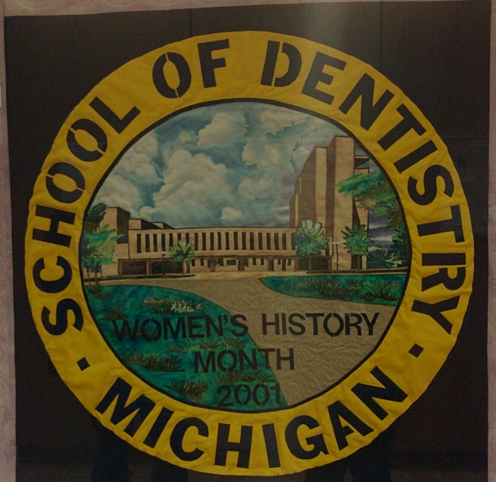
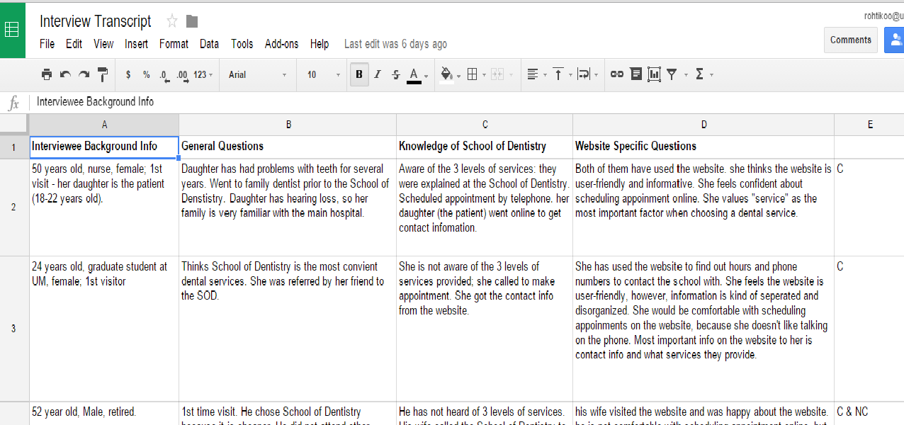
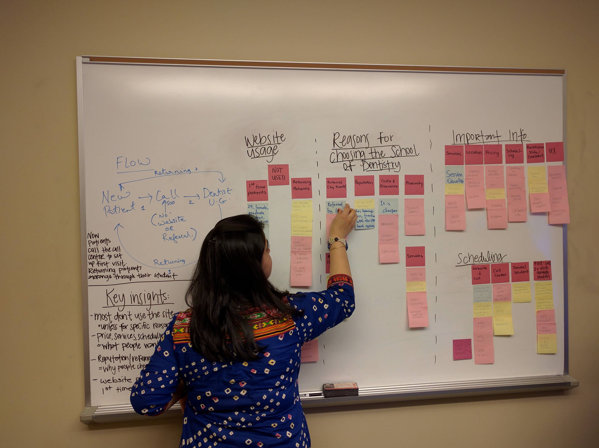
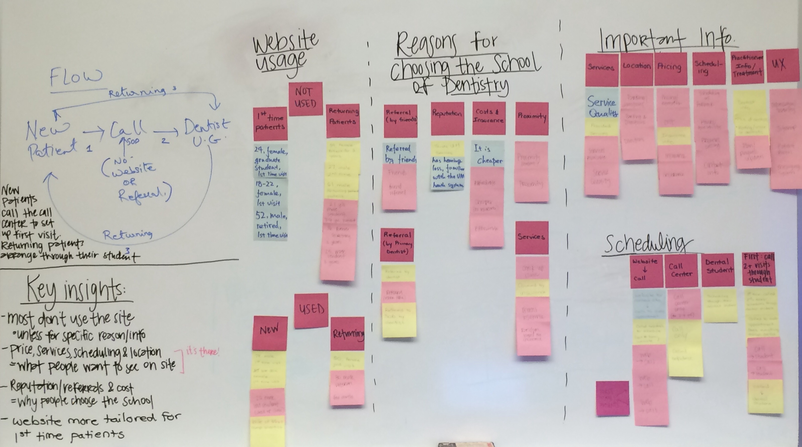
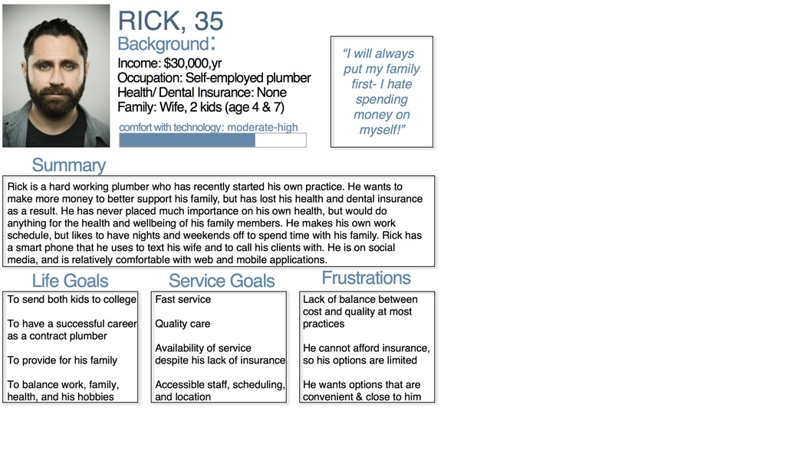
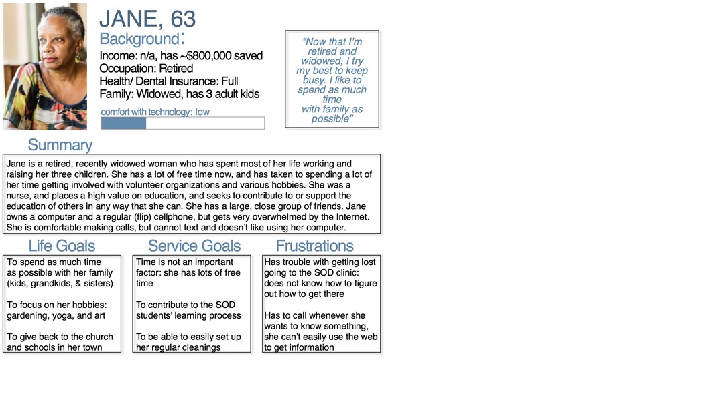
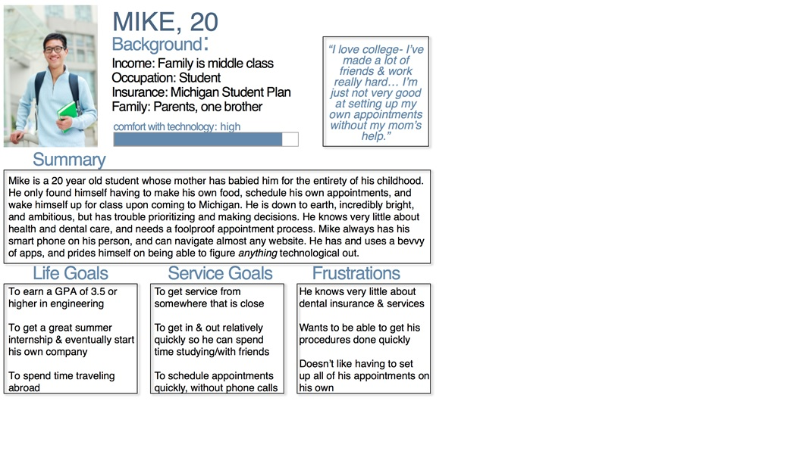
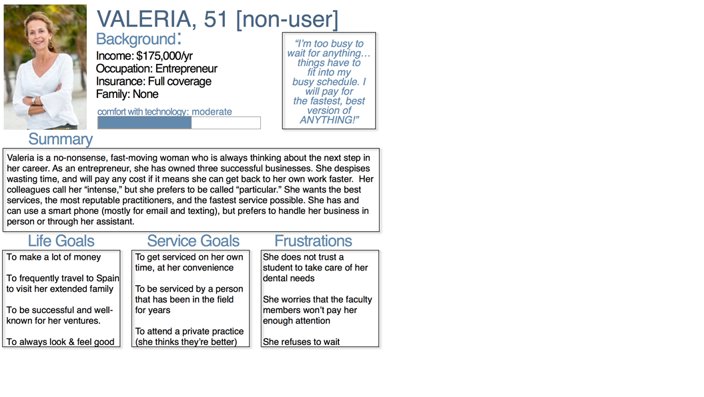
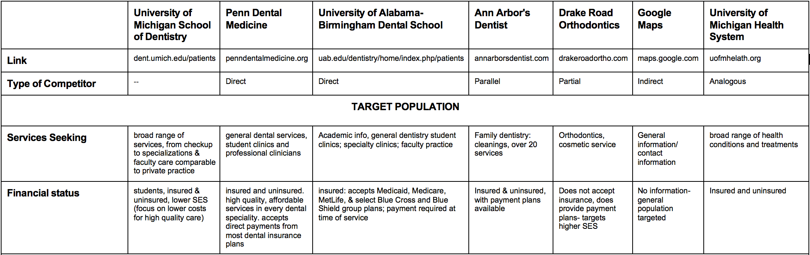
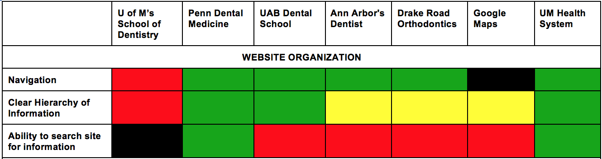

<
DentalUX

Problem Statement
University of Michigan School of Dentistry (UMSOD) need to perform a capacity and needs analysis of the patients section of their website as it has received a lot of criticism for poor website design. Link : http://dent.umich.edu/patients
UX Research Process Followed
Examination Phase
<
1.Interactive Map
Examined the UMSOD's website http://dent.umich.edu/patients to understand the site map.


2. Interviews
The interviews were conducted to help us identify how patients learn about the SOD, why they chose the SOD, and their behaviors and attitudes when interact with the website. Due to the diverse patient population at SOD, we interviewed 15 individuals: patients and those accompanying patients as they were awaiting their appointments.

Affinity Wall

To formulate our personas, we created an affinity wall to pick out the most pervasive themes in our interviews: the type of people we interviewed, their unique reasons for choosing the School of Dentistry as their service provider, and the things that are most important to them.

Key Findings
1.Most interviewees do not use the website repeatedly.
2.Some patients are unaware that the website exists.
3.The site does not include functions to track patients’ medical and payment records.
4.Many patients like the idea of scheduling appointments online, but the website does not have this function.
5.Most patients think the website is difficult to navigate.
6.The three levels of treatment options are not clearly explained to patients.
Key Recommendations
1.Promote the website.
2.Build a portal for patients to track their dental records.
3.Allow patients to schedule online.
4.Redesign the user interface and create a search box.
5.Make treatment options obvious.
3.Personas and Scenarios
Persona 1: Rick Hodges

Scenario 1: Rick Hodges
Rick has taken up a plumbing contract with the University of Michigan LSA department and while he was fixing the pipes, he accidentally chipped his tooth. He is worried as he does not have any insurance. His friend suggests that he should go to the School of Dentistry to get his tooth fixed before it starts causing him pain. His friend explains that in his experience, the students at the school provide affordable, good quality dental services. He gets the phone number of the SOD from his friend and schedules a dental appointment for the next week. He receives the SOD Welcome packet in the mail two days before his scheduled appointment.
Rick opens the Welcome packet and learns about the three different types of dental services provided by the SOD. Rick checked the website link that was provided in the SOD Welcome packet and discovered that they are able to help patients who do not have insurance.
He reaches the SOD the next week and waits in the new patient check-in line. The SOD check-in clerk assigns him to one of the students, who conducts a free oral examination for Rick in order to recommend his proper treatment option: the undergraduate clinic. Rick is told that he will be receiving a call within two days from the dental student assigned to him in order to arrange the reconstruction of his chipped tooth.
After experiencing the great and affordable service at the SOD , Rick feels satisfied and waits for the second appointment call from the dental student assigned to him. Rick is also confident that the overall cost of his treatment will be much cheaper than the private clinics.
Persona 2: Jane Buchanan

Scenario 2: Jane Buchanan
Jane, 65, is a retired Registered Nurse who is driving to her second visit for her periodontal disease at the U-M School of Dentistry Periodontics Clinic. Her primary dentist referred her to the U-M School of Dentistry Periodontics Clinic due to the high reputation of the graduate dentist students and her insurance coverage. Jane is happy about this recommendation because she likes the idea of playing an important role for the learning students.
As Jane drives, she recalls her frustration in finding information about directions and parking at the SOD. She visited the University of Michigan once because her grandson began attending the University of Michigan for his undergraduate studies. However, she was not familiar with the SOD. Her primary dentist had written down the SOD phone number and website for her, but she misplaced the information. Unfortunately, she could not call her primary dentist because the office closed. Instead, she asked her grandson if he could use the Internet to find directions to SOD since she was not comfortable using a computer. He successfully finds the website and the information, and gives her the directions over the phone.
After arriving at the SOD, she walks into the waiting room and waits for her graduate dentist student. As she is finishing up her visit, she jokingly says to her graduate dentist student that she never would have found the place had her grandson not used the website to look up directions for her. She then proceeds to ask him about where she needs to go to set up her next appointment for a cleaning. She is relieved to learn that she sets up her appointments directly with him for the remainder of her time at SOD. He walks her to the front desk, makes sure that her service is properly paid for, ensures that her parking ticket is validated, and points her in the right direction to leave the clinic.
Persona 3:Mike Zhao

Scenario 3 :Mike Zhao
Mike has transferred to the University of Michigan's undergraduate engineering program after living in California his whole life. In California, he'd gone to the same dentist and doctor since he was a young child. His dad works as a software developer and his mom is a stay-at-home mom and has dedicated a lot of her time to taking care of Mike and scheduling his appointments.
Mike has gone almost 8 months without seeing his dentist (who has called him and his mother multiple times to remind him of this fact). He tells his mom that he has just been "too busy" to schedule appointment, but in reality, he doesn't know how to do so. He talks to one of his friends who also has the Michigan student insurance and asks how to go about scheduling a checkup. His friend Facebook chats him the link to the School of Dentistry's patient webpage, and tells him that he should select the "Check-Up Clinic" on the right side of the page. He isn't sure what most of the content on the page is, and frankly finds it rather unappealing, but finds the link, and submits the Google form to request an appointment.
The next day, Mike receives a phone call from the School of Dentistry's scheduling and call center, and they say that they have scheduled him for a checkup for the upcoming Thursday. Despite his initial impressions of the webpage, Mike is pleased with the quickness of the response. He asks for additional information from the clerk regarding where to go for his appointment, how to check in, and how to pay. She never mentions the website, but instead, just answers all of his questions over the phone.
Mike arrives for his appointment, and follows the instructions exactly as the woman on the phone explained to do so: he went to the second floor, checked in at the desk, and took a seat. His undergraduate dental student and a hygienist came to get him, and he was pleased to see that they were both young and very casual with him. At the end of the visit, the undergraduate student gave him his phone number to use to set up future appointments, which Mike felt very positively about.
Persona 4: Valeria Martinez
Non User

4.Comparative Analysis
We evaluated six selected comparator with our criteria to identify both good and bad functionality and
design. The idea behind this analysis is to find out what approaches work and do not work in competing sites, and then use this knowledge as a foundation for decisions in
redesigning the patient section of the SOD's website

Color Code :
Green = Exists,Well Done
Yellow = Exists Decent
Red = Exists , Poorly Done
Black = Non Existent/Missing



Key Findings
1. Ineffective navigability and information architecture makes it harder to find
information on the SOD website in comparison to the competitors'.
2. The core functions that people desire from the website are difficult to access and
are not as effectively executed as the competitors.
3. The SOD website lacks images and graphics on the site.
4. There is no ability for customers to interact with administration via internal email or messaging system on the SOD website.
5. Despite the importance of reputation expressed by our interviewees, the SOD patient website has very little promotional material of their services or achievements.
Recommendations
1. Incorporate a navigation bar to allow users to easily access content, and build a better hierarchy of the most relevant/important information, group content accordingly.
2. Redesign the homepage of the patients' section of the site or create a separate patient website to incorporate the core functions and information users identified as being most important.
3. Include images and graphics on the site to increase visual appeal of website.
4. Have an internal messaging system or internal email feature that allows
customers to interact with SOD administration.
5. Promote the world class services and achievements of the SOD.
- Date: January 2016- ongoing project
- Client: University of Michigan School of Dentistry
- Category:UX Research - User Needs and Usability Evaluation